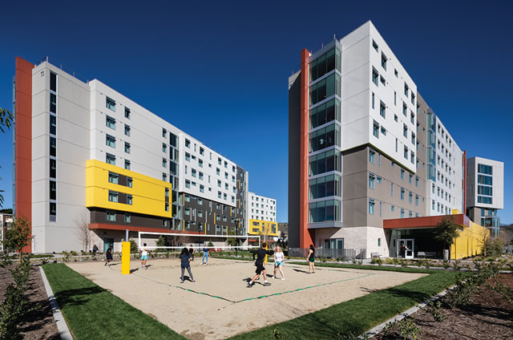

- I got accepted into Cal Poly Pomona for Computer Science! Compared to other universities, CSULB's Computer Science program is pretty mid and UCI is too expensive for tuition and housing
-
Note: I got into UCI for Aerospace Engineering as a secondary major
Even if the cost to attend wasn't as expensive as it currently is, I wouldn't have went to UCI for Aerospace Engineering -
The Computer Science program here is pretty good
- Before entering this university, I heard that Cal Poly Pomona had a relatively hands-on Computer Science program instead of a much more theoretical focus (Stanford and UC Berkeley)
- As a result, I thought that going to this university would help better me in my career path as a future software engineer!
-
There were many social opportunities for students living on campus
(the dorm life)
- Having lived on campus my first year, I enjoyed the residental halls! Living on the second highest floor felt like I was in living in a luxury hotel.
- In addition, the dorming community was great and I got to know a lot of people from the many social gatherings on each floor, including many other students in this class!
